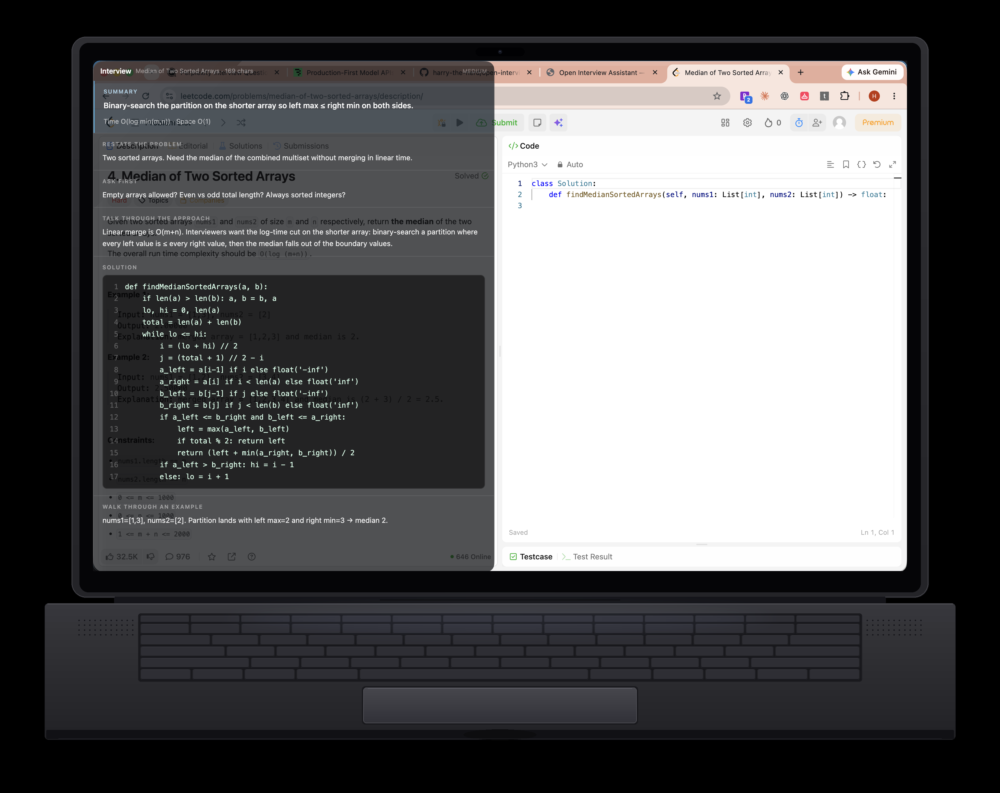

Build a complete talk track
Move from restating the problem to clarifying questions, approach, code, complexity, and a worked example.
Turn a coding problem into a structured walkthrough you can rehearse out loud. Run the overlay on your machine, use your own API key, and customize every part of the experience.

Strong technical interviews require a clear thought process. The overlay turns a problem into a structured guide you can rehearse, question, and adapt to your own voice.
Move from restating the problem to clarifying questions, approach, code, complexity, and a worked example.
The Chrome extension reads the current page only when you press the shortcut. It never needs microphone or screen-capture access.
The mouse passes through the overlay, while keyboard shortcuts handle scrolling, docking, opacity, and answer effort.
Interview Coder and UltraCode charge hundreds for a closed tool that asks for mic and screen-recording permission. Open Interview Assistant is free, open source, and never turns on the OS privacy indicator.
| Capability | Open Interview Assistant | Interview Coder / UltraCode |
|---|---|---|
| Price | Free — bring your own API key | ~$799 closed paid product |
| Open source | Yes — Apache 2.0, fork and tweak | No — closed binary |
| Microphone permission | Never requested | Required |
| Screen recording permission | Never requested | Required |
| OS privacy indicator | Stays off — no orange/green light | Lights up — can make interviewers suspicious |
| How it reads the question | Chrome extension reads the HTML DOM text from CodeSignal, HackerRank, LeetCode, and similar pages | Mic + screen capture / pixel screenshots |
| Answer quality input | Clean page text — better signal than screenshots | Noisy pixels and OCR-style capture |
| Invisible overlay | Local always-on-top panel with content protection; hidden from screenshare | Vendor-controlled closed overlay |
| Customizable | Change shortcuts, prompts, layout, opacity — ship your own variant | Locked product surface |
| Your keys / your machine | Runs locally with your Anthropic key — no app account | Paid vendor stack |
Competitor pricing and permission behavior based on publicly marketed Interview Coder / UltraCode offerings. Always verify current pricing and permissions on their sites before purchasing.
Open a problem, generate a guide, then rehearse how you would explain it.
LeetCode, a doc, a take-home brief — anything in Chrome. The extension only reads when you ask.
Page context reaches the local app over an authenticated loopback connection, then goes to Anthropic with your API key.
Rehearse a realistic interview arc: summary → clarify → approach → code → complexity → walkthrough.
Understand every step, keep control of the key, and change what does not fit.
Chrome extension reads the page on demand — cleaner input than screenshots, no screen-recording permission.
Structured like a strong candidate talks: orient, clarify, approach, code, prove it.
Dock, hide, scroll, opacity, and effort are all shortcuts, so your hands can stay in the editor.
Browser and overlay connect over authenticated loopback. The captured URL, title, and page text go to Anthropic using your key.
Claude Sonnet decides how long to reason. Cycle effort when you need speed or extra care.
Apache 2.0. Change shortcuts, prompts, layout, opacity — ship the version that fits you.
Not a locked binary with a waitlist. A small Electron app and a plain Chrome extension you can read, change, and run on your machine.
electron/
src/App.tsx
llm.ts
extension/
Bring an Anthropic API key and allow a few minutes for the one-time local setup. No Open Interview Assistant account required.
# clone git clone https://github.com/harry-the-nerd/open-interview-assistant.git cd open-interview-assistant # install + configure npm install echo 'ANTHROPIC_API_KEY=sk-ant-...' > .env # run the overlay npm run dev
chrome://extensions and enable
Developer mode.
extension/ folder.
chrome://extensions/shortcuts — or change the app
bindings.
| Shortcut | Action |
|---|---|
| ⌘⇧U | Send this page and answer — the daily driver |
| ⌘↵ | Answer again from what was already captured |
| ⌘↑ ⌘↓ | Scroll the answer |
| ⌘B | Hide or show the panel |
| ⌘⇧← ⌘⇧→ | Dock left or right |
| ⌘⇧S | Flip to the other side |
| ⌘⇧↑ ⌘⇧↓ | Nudge the panel up or down |
| ⌘⇧E | Cycle thinking effort |
| ⌘⇧O | Cycle opacity |
| ⌘⇧K | Show or hide help |
| ⌘R | Clear everything |
Open source means the useful details—and the tradeoffs—should be easy to find.
Open Interview Assistant is the free, customizable BYOK tool. DarkInterview adds curated question banks, structured courses, and company-specific tracks.